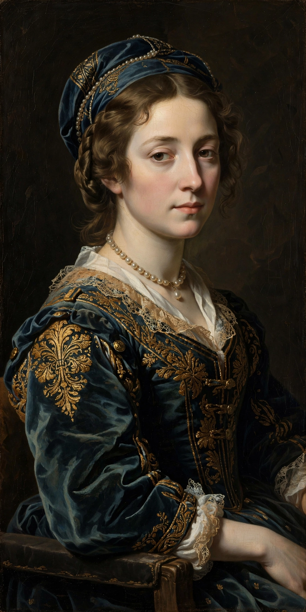

A portrait is a painting, photograph, sculpture or other artistic representation of a person, in which the face and its expression are predominant. Portraits serve to display the likeness, personality and status of the sitter, and range from formal state images of rulers to intimate self-portraits by artists.

Portraiture is ancient: Egyptian Fayum mummy portraits of Roman times preserve startlingly naturalistic faces. In medieval Europe portraits were often generic, but the Renaissance revived individual likeness — in the work of Jan van Eyck, Leonardo da Vinci (whose Mona Lisa is the world's most famous portrait), Raphael and Titian. Court portraitists such as Van Dyck and Velázquez codified images of power, while Rembrandt's many self-portraits charted a life in paint.
Sitters are shown full-length, half-length or bust, and facing full-front, in profile, or — most commonly in Western painting — in three-quarter view. Conventions of pose, dress, attributes and setting communicate occupation, virtue and rank.
From the daguerreotype of 1839, photographic portraiture democratised likeness, moving the genre into studios, identity documents and eventually the smartphone “selfie”. Portrait photographers such as Julia Margaret Cameron, Nadar and Richard Avedon made the medium an art in its own right.
Recreated from memory.